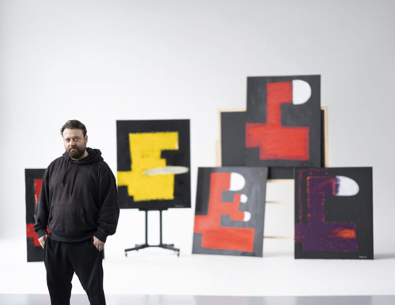

About the artist
Paul Sergounine

Paul Sergounine (b. 1984) is a contemporary painter working between Tbilisi and Düsseldorf. He is represented by Galerie Bruno Massa.
He grew up in Düsseldorf, where he graduated from the International School of Düsseldorf in 2003. He studied at Webster University in Leiden and at ISG in Paris before completing a BA in International Management at Webster University Vienna in 2008. After many years living and working internationally, he established his studio in Tbilisi in 2021.
His ongoing series, Mind Mechanics (2025–), is conceived as a cycle of 250 paintings in five fixed formats, from 100 × 120 to 200 × 240 cm, numbered in the order made rather than titled. It began as an investigation into memory, perception, identity and the internal structures of consciousness. A recurring head profile runs throughout — not a portrait but an architectural framework, a vessel for thought rather than identity.
The early works established a distinctive visual language through oil stick and oil pastel on black acrylic grounds. As the series developed, Sergounine increasingly expanded his materials and working methods, introducing successive layers, physical excavation and the cannibalisation of former works. In later paintings, spray paint and parchment paper join the oil stick and oil pastel; layers are built up, concealed and scraped back, so that pigments from previously separated stages mix and exposed fragments of earlier compositions stand against newly introduced layers. Cannibalisation, which began with No. 56, means that earlier paintings are cut apart and selected fragments are incorporated into new compositions. The psychological origins and recurring forms of the series remain. A parallel series, Totems (2025–), develops the same concerns in vertical, architectural form.
In February 2027 his work will be shown at the CICA Museum in Gimpo-si, South Korea. In April 2027, Sergounine is scheduled to participate in an artist residency at the Ria Keburia Foundation in Georgia.
Statement
I do not paint to decorate, illustrate, or comfort.
I paint to expose the unstable architecture of thought.
My work investigates the structures through which consciousness, memory, perception and identity take shape.
Rather than depicting external reality, I explore how experiences accumulate, fragment, erode and reorganise over time.
In Mind Mechanics, recurring forms establish a visual framework in which order and instability coexist.
Alongside this psychological investigation, my practice has evolved towards a more physical and experimental approach.
I am interested not only in what a painting expresses, but also in what can be discovered through direct intervention.
The canvas becomes a place of exploration, where deliberate actions lead to consequences I cannot always anticipate.
Working with acrylic ground, oil stick and oil pastel, I build successive layers that are repeatedly altered, concealed and exposed.
Scraping allows me to uncover what lies beneath, bringing previously separated pigments into contact and revealing unexpected relationships between earlier gestures and new interventions.
In this sense, my works function as palimpsests, compositions in which traces of previous states survive beneath, and sometimes within, what has replaced them.
Like memory itself, the image retains evidence of its past even as its structure continues to change.
These discoveries influence the direction of the painting, allowing the process itself to challenge my original intentions.
Beginning with Mind Mechanics No. 56, I introduced the cannibalisation of former works, expanding my practice towards greater physical depth and dimensionality.
Paintings that no longer satisfy me are cut apart, their fragments becoming elements of new compositions.
I also began incorporating spray paint, parchment paper, newspaper and pages from books, extending the material possibilities of the canvas.
This development is particularly evident in Mind Mechanics No. 58, where different materials are brought together through assemblage, without incorporating fragments of previous paintings.
By reusing parts of former works, I allow their histories to continue in another form rather than disappear entirely.
I have no interest in the polished finish that comes from repeated practice.
I leave marks hurried, corrected or imperfect, because refinement can erase the evidence of decisions made in the moment.
For me, spontaneity does not exclude rigour; it demands an openness to what cannot be fully controlled.
My paintings do not seek definitive answers.
They remain investigations of consciousness, shaped equally by intention, physical action and the discoveries that emerge between them.
Curriculum Vitae